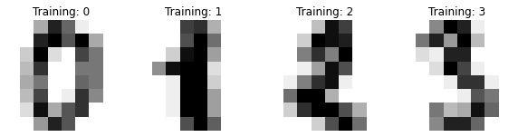
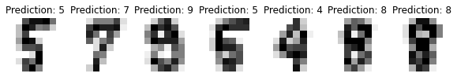

largeqsvを再現させます pythonのテスト
a=1
print(a)
1
# Author: Gael Varoquaux <gael dot varoquaux at normalesup dot org>
# License: BSD 3 clause
# Standard scientific Python imports
import matplotlib.pyplot as plt
# Import datasets, classifiers and performance metrics
from sklearn import datasets, svm, metrics
from sklearn.model_selection import train_test_split
digits = datasets.load_digits()
_, axes = plt.subplots(nrows=1, ncols=4, figsize=(10, 3))
for ax, image, label in zip(axes, digits.images, digits.target):
ax.set_axis_off()
ax.imshow(image, cmap=plt.cm.gray_r, interpolation="nearest")
ax.set_title("Training: %i" % label)

from skqulacs.qsvm import QSVC
from skqulacs.circuit import LearningCircuit
from skqulacs.circuit import create_largeqsv
n_qubit=8
circuit = create_largeqsv(n_qubit,8,0.035)
# flatten the images
n_samples = len(digits.images)
data = digits.images.reshape((n_samples, -1))
# Create a classifier: a support vector classifier
clf = QSVC(circuit)
# Split data into 72% train and 38% test subsets
#len=1797 1797*72%=1293 大体同じ
X_train, X_test, y_train, y_test = train_test_split(
data, digits.target, test_size=0.72, shuffle=False
)
# Learn the digits on the train subset
clf.fit(X_train, y_train)
# Predict the value of the digit on the test subset
predicted = clf.predict(X_test)
---------------------------------------------------------------------------
ModuleNotFoundError Traceback (most recent call last)
/tmp/ipykernel_5815/1829377924.py in <module>
----> 1 from skqulacs.qsvm import QSVC
2 from skqulacs.circuit import LearningCircuit
3 from skqulacs.circuit import create_largeqsv
4
5
ModuleNotFoundError: No module named 'skqulacs'
_, axes = plt.subplots(nrows=1, ncols=7, figsize=(10, 3))
for ax, image, prediction in zip(axes, X_test, predicted):
ax.set_axis_off()
image = image.reshape(8, 8)
ax.imshow(image, cmap=plt.cm.gray_r, interpolation="nearest")
ax.set_title(f"Prediction: {prediction}")

disp = metrics.ConfusionMatrixDisplay.from_predictions(y_test, predicted)
disp.figure_.suptitle("Confusion Matrix")
print(f"Confusion matrix:\n{disp.confusion_matrix}")
plt.show()
Confusion matrix:
[[126 0 0 0 1 0 0 0 0 0]
[ 0 109 5 0 0 0 0 0 16 0]
[ 1 0 114 4 0 0 0 1 0 5]
[ 0 0 2 112 0 3 0 6 4 3]
[ 0 1 0 0 121 0 0 3 0 7]
[ 0 0 0 0 1 116 2 1 0 12]
[ 1 1 0 0 0 0 128 0 0 0]
[ 0 0 3 0 0 1 0 122 2 1]
[ 0 8 3 0 0 4 0 2 104 6]
[ 1 11 0 0 0 2 0 3 2 113]]
print(n_samples)
1797